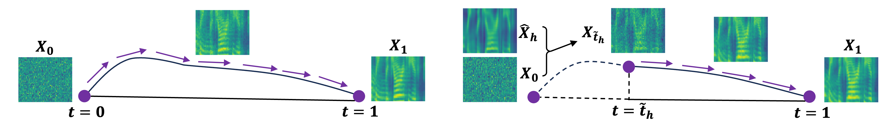

Shallow Flow Matching for Coarse-to-Fine Text-to-Speech Synthesis
1The University of Tokyo, 2Independent Researcher, 3Nanyang Technological University
Abstract. We propose a shallow flow matching (SFM) mechanism to enhance flow matching (FM)-based text-to-speech (TTS) models within a coarse-to-fine generation paradigm. SFM constructs intermediate states along the FM paths using coarse output representations. During training, we introduce an orthogonal projection method to adaptively determine the temporal position of these states, and apply a principled construction strategy based on a single-segment piecewise flow. The SFM inference starts from the intermediate state rather than pure noise and focuses computation on the latter stages of the FM paths. We integrate SFM into multiple TTS models with a lightweight SFM head. Experiments show that SFM consistently improves the naturalness of synthesized speech in both objective and subjective evaluations, while significantly accelerating inference when using adaptive-step ODE solvers.
An example of inference process

Left: standard flow matching. Right: shallow flow matching. (Notation in this figure strictly adheres to that of Section 3.2.3)